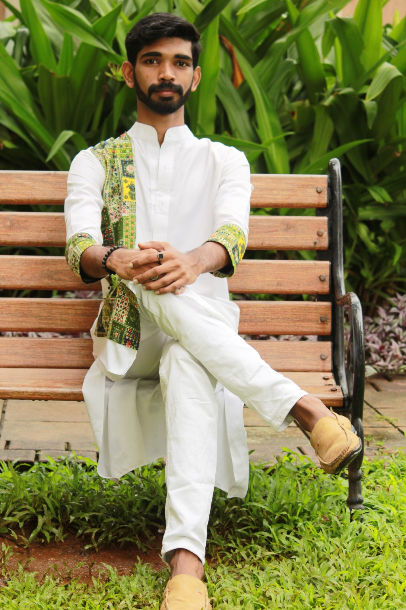
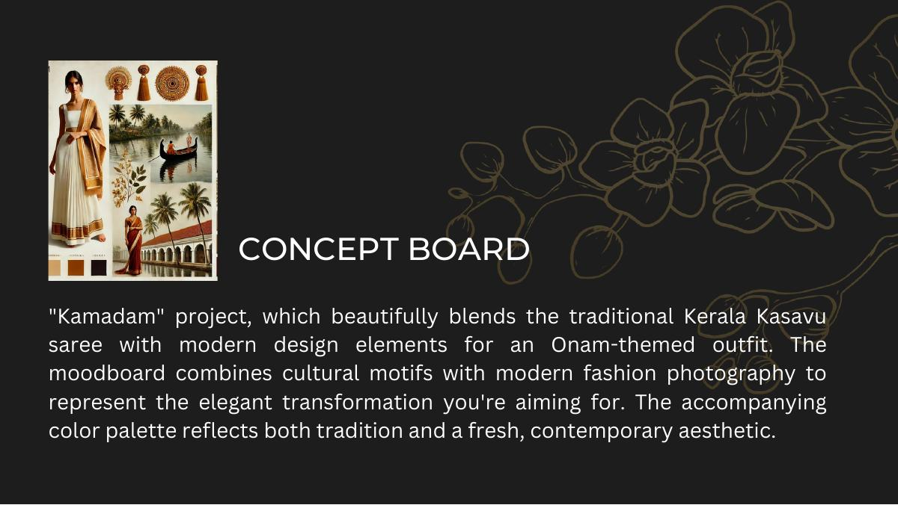
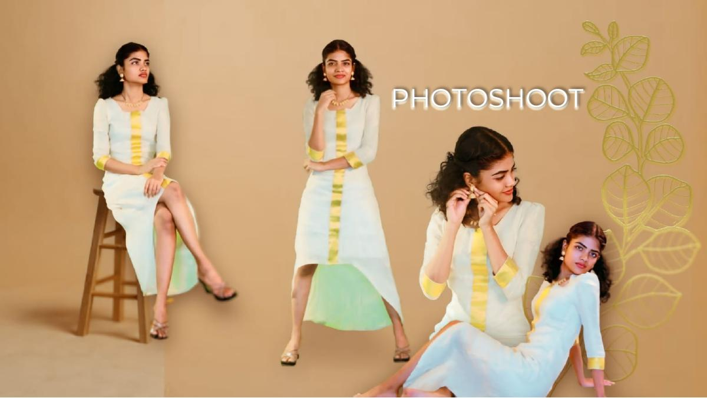
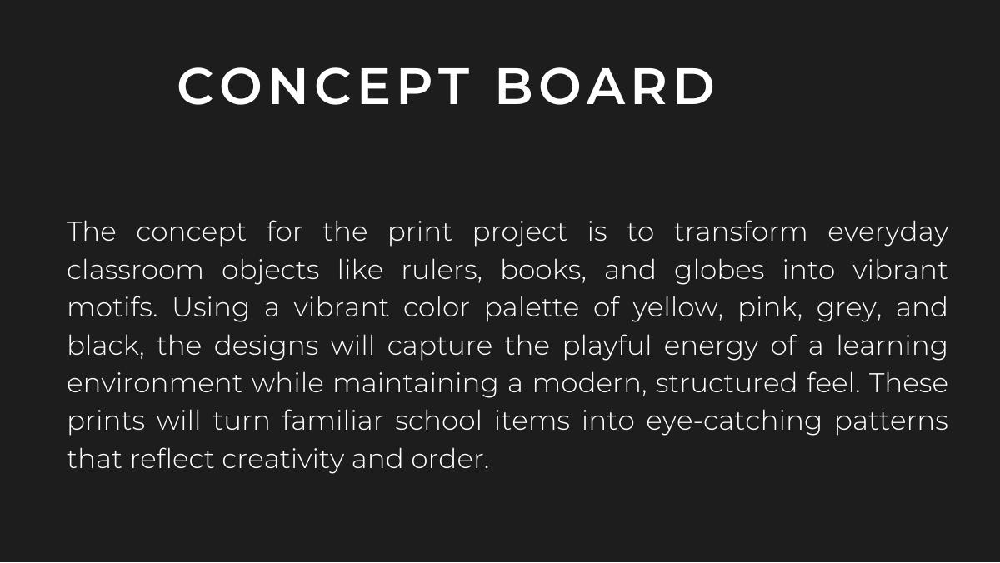
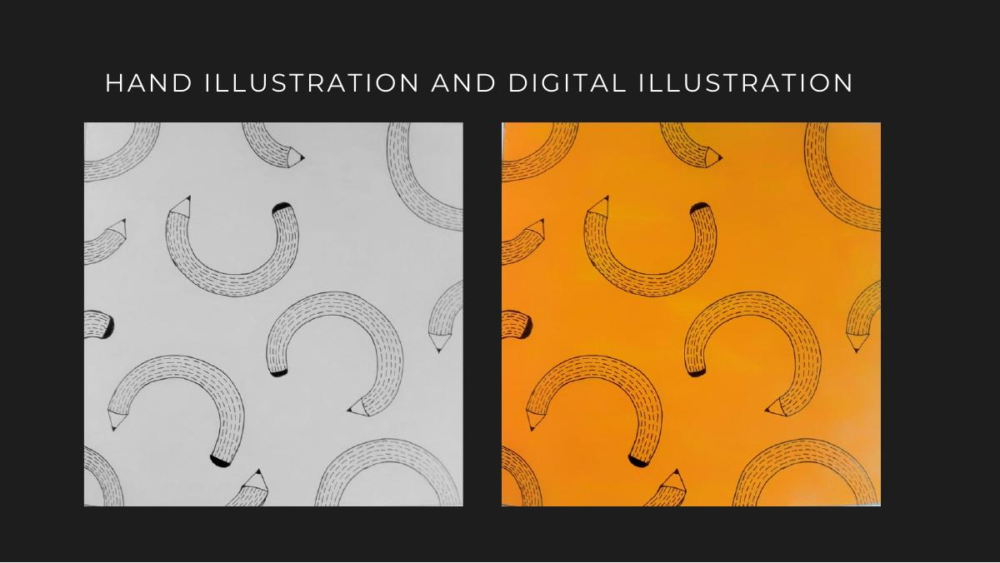
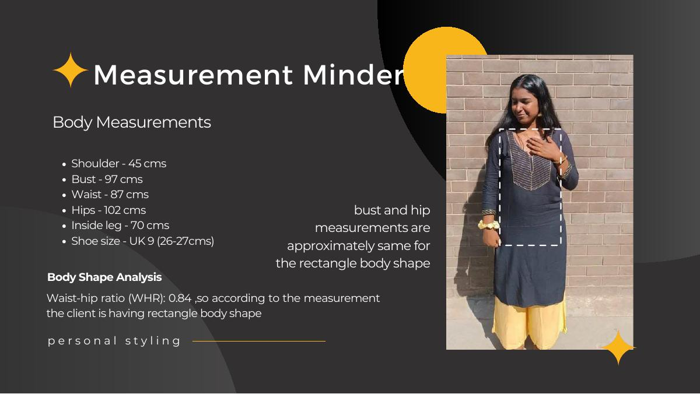
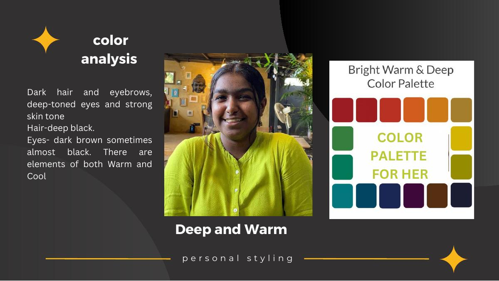

Dinite
P. Noble
Crafting ideas through fashion, surface, material, art and visual storytelling.

A designer driven by curiosity, craft & individuality.
I am a Fashion Designer and Creative Designer with a background in fashion design, craftsmanship, surface development and visual communication.
My practice moves between fashion, art and design. I enjoy working with materials, experimenting with techniques and transforming ideas into tangible outcomes.
From hand embroidery and garment construction to sustainable material exploration, mixed-media artworks and visual identity, I approach each project through research, experimentation and hands-on making.
I believe that good design is not only about how something looks, but also about the thought, process and craftsmanship behind it.
Ideas made tangible.
ELYSIUM
Inspired by the concept of nirvana in Buddhism, ELYSIUM blends futuristic allure with Kirigami craftsmanship and draping to create wearable art.
KirigamiDrapingWearable ArtFashionThe collection explores light, space, spirituality and fluidity through carefully selected fabrics, combining cutting-edge ideas with time-honored craftsmanship.
JOURNEY TO THE SOUL OF INDIA
An exploration of Indian traditional embroidery, moving from research into a hand-embroidered product.
KanthaPhulkariKasutiKashidaChikankariThe project studies traditional Indian embroidery practices and translates the research into contemporary textile application, including a hand-embroidered shirt using Phulkari embroidery.
KAMADAM
A contemporary Onam-themed fashion project blending the traditional Kerala Kasavu saree with modern design elements.
KeralaKasavuOnamFashion

LET'S DESIGN WITH THE FLOW
Print development transforming everyday classroom objects such as rulers, books and globes into vibrant motifs.
Print DevelopmentHand IllustrationDigital Illustration

PERSONAL STYLING
A structured styling project covering body-shape analysis, colour analysis, style personality, wardrobe organisation and shopping guidance.
Body AnalysisColour AnalysisWardrobePersonal Styling

ART, CRAFT & INSTALLATION
Professional design work spanning sustainable art installations, traditional techniques, mixed media and corporate spaces.
Sustainable ArtMixed MediaGond ArtInstallationAs a Junior Designer at Tisser Artisan Trust, Dinite worked on handcrafted sustainable art installations, collaborating with Gond artists. Works were displayed at American Express and Microsoft offices in Delhi and Gurugram.
Open selected portfolio PDFDesign in practice.
Alongside academic projects, my experience spans luxury fashion retail, client styling, visual merchandising, costume design and sustainable art installations.
Shantanu & Nikhil
Fashion ConsultantLuxury fashion consulting, client styling, visual merchandising, sales and premium fashion retail operations.
- Client styling and personalised service
- Visual merchandising and store operations
- Client measurements and alteration coordination
- Sales, follow-ups and target management
Tisser Artisan Trust
Junior Designer · Jul–Aug 2024Created handcrafted sustainable art installations using traditional techniques and innovative materials.
- Collaborated with Gond artists
- Supported sourcing, detailing and finishing
- Projects displayed at American Express and Microsoft offices
Costume Design
2025Worked on costume projects including a television programme and collaboration with Pothys textile group on a Christmas collection.
STYLE Q Magazine / IQAC
2021–2023Creative Editor for the college magazine and Graphic Designer for IQAC workshops.
What I bring to a project.
Fashion
Design Development · Pattern Making · Draping · Garment Construction · Personal Styling
Craft
Hand Embroidery · Illustration & Painting · Surface Development · Material Experimentation
Creative
Concept Development · Visual Communication · Graphic Design · Creative Direction
Digital
Illustrator · Photoshop · InDesign · Canva · 3ds Max · CLO · Word & Excel · Premiere Pro
A concise view of my journey.
B.Des Fashion Design
Amity University Mumbai · 2021–2025 · 9.1 CGPA
Gold Medalist — First Rank in B.Des (Fashion Design)
Student of the Year Award — academic excellence and overall performance
Let's create something meaningful.
For creative opportunities, collaborations, design projects or simply to connect.